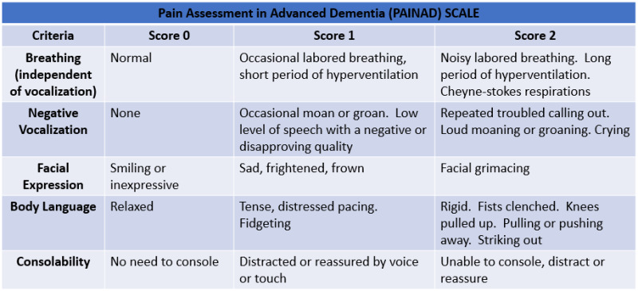
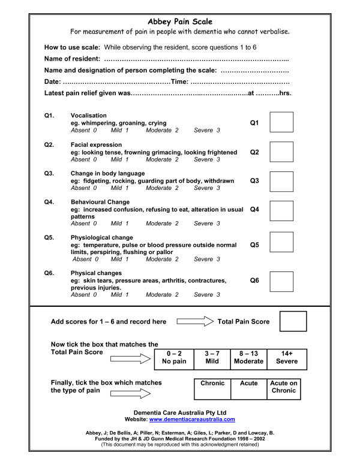

Self Report |
If possible, always ask the patient with dementia about their pain, a person’s self-report is the most reliable measure. If this is not possible, try using the people around them who know them best to discuss whether their behaviour is normal. Any change from the norm could be due to underlying pain.
Short Questions |
Keep questions short, simple and precise. For example, 'Do you have pain?', 'Does it hurt here?'
Without Self Capacity:
Non-Verbal Prompts |
Use non-verbal prompts like pointing or touching to communicate pain points in the patient. This can be on yourself, on the patient (with consent) or by using visual aids. For example, pointing to the patient's arm or gently touching their wrist to see if there is a reaction. Alternatively, the Wong-Baker Pain Scale is a good example of using point to assess pain when the patient cannot verbally communicate this.
Non-Verbal Assessment |
If you think that the patient cannot verbally discuss their pain, try observing their behaviour and using non verbal clues. Examples of this are: grimacing facial expressions, moaning with movement and distressing changes in behaviour. The Abbey Pain Scale and for advanced dementia - the Pain Assessment in Advanced Dementia Scale (PAINAD) are good examples of a tools to use to assess non-verbal patients.
PAINAD:

Abbey Pain Scale:
